|
|
描述
图像滤波对话框提供多种图像平滑和边缘滤波器，以及锐化滤波器和用户可自定义的滤波器。
输入与结果
输入：
任意数量的图像数据对象。
结果：
平滑图像或边缘滤波图像。
用户界面
如果选择平均选项卡，则使用采用二项式分布的滤波器系数的二维平均算法对图像进行平滑。
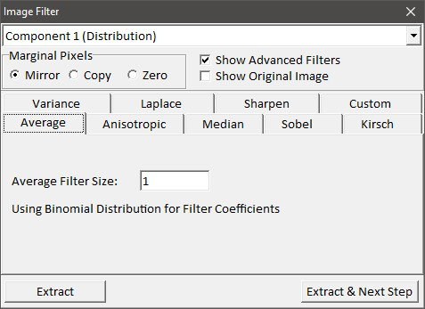
PET（组合框）：
如果放置了多个图像，您可以在此处选择当前预览图像。
边缘像素（单选按钮）：
大多数滤波器使用一定窗口大小，使用输入图像的多个像素来计算结果像素。对于边缘像素/如果滤波器窗口超出图像，您可以选择像素被镜像、边界像素被复制或像素将被设为零。
显示高级滤波器（复选框）：
这将使所有边缘滤波器和自定义滤波器对用户可见。
显示原始图像（复选框）：
如果勾选，预览图像查看器显示选定的原始图像而不是滤波器预览。更改某些滤波器选项时，请不要忘记关闭此模式以查看滤波器预览。
平均滤波器大小：
设置平均滤波器的滤波器大小。总平均窗口大小为 (2 * <滤波器大小> + 1)^2。
提取（按钮）：
计算并将结果图像提取到当前项目中。
提取并下一步（按钮）
向导功能：您可以将此对话框的结果图像用作图像合并：
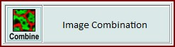
如果选择各向异性选项卡，则使用同时保留边缘的各向异性平滑滤波器对图像进行平滑（参见 D. Tschumperle, Lecture Notes in Computer Science, 3952, 295 [2006]）。这是 WITec Project Plus 功能。
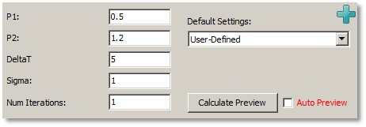
P1, P2, DeltaT, Sigma, 迭代次数（编辑框）：
更改各向异性图像滤波器的行为。
默认设置（组合框）：
选择针对小结构和大结构的预定义设置。
计算预览（按钮），自动预览（复选框）：
参见自动预览。
对话框打开时自动预览被禁用。
如果选择中值选项卡，则使用二维中值算法对图像进行平滑。
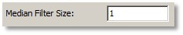
中值滤波器大小（整数编辑框）：
设置中值滤波器大小。总中值窗口大小为 (2*<滤波器大小>+1)^2。
如果选择 Sobel 选项卡，可以通过在不同方向上使用 Sobel 算子搜索来检测图像中的边缘。此外，可以显示最大梯度的角度。这是 WITec Project Plus 功能。
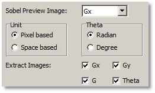
Sobel 预览图像（组合框）：
您可以选择应在预览中显示哪个 Sobel 结果：Gx（显示 x 方向边缘）、Gy（显示 y 方向边缘）、G（显示 x 和 y 方向边缘）、Theta（将边缘角度显示为强度）
单位（单选按钮）：
更改边缘单位：基于像素或基于空间（单位 µm）。
Theta（单选按钮）
更改角度单位：弧度或度。
提取图像（复选框）：
选择使用提取按钮时应提取哪些 Sobel 结果。
如果选择 Kirsch 选项卡，可以通过在不同方向上使用 Kirsch 算子搜索来检测图像中的边缘。这是 WITec Project Plus 功能。
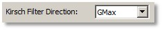
Kirsch 滤波方向（组合框）：
您可以更改 Kirsch 滤波器的边缘角度（G1 - G8 和使用所有方向的 GMax）。
如果选择方差选项卡，可以通过计算二维方差来检测图像中的边缘。这是 WITec Project Plus 功能。
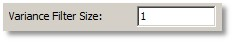
方差滤波器大小（整数编辑框）：
您可以更改方差滤波器大小。总滤波器窗口大小为 (2*<滤波器大小>+1)^2。
如果选择 Laplace 选项卡，可以使用 Laplace 算子检测图像中的边缘。这是 WITec Project Plus 功能。
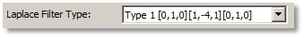
Laplace 滤波器类型（组合框）：
在预定义的 Laplace 滤波器系数之间选择。
如果选择锐化选项卡，则使用反锐化掩模技术对图像进行滤波。这是 WITec Project Plus 功能。
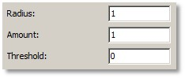
半径、数量、阈值（编辑框）：
更改锐化图像滤波器的行为。
如果选择自定义选项卡，则使用用户定义的滤波器系数对图像进行滤波。这是 WITec Project Plus 功能。
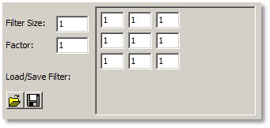
滤波器大小（整数编辑框）
更改用户定义滤波器的滤波器大小。总滤波器窗口大小为 (2*<滤波器大小>+1)^2。
因子（浮点编辑框）：
所有滤波器系数相乘的因子。
加载/保存滤波器（工具按钮）：
您可以保存当前自定义滤波器，稍后再重新加载。
滤波器系数（浮点编辑矩阵）：
在右侧的浮点编辑矩阵中输入您的滤波器系数。
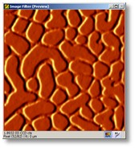
预览图像查看器显示平滑/锐化/边缘算法的预览。您可以切换"显示原始"复选框以将结果与原始图像进行比较。